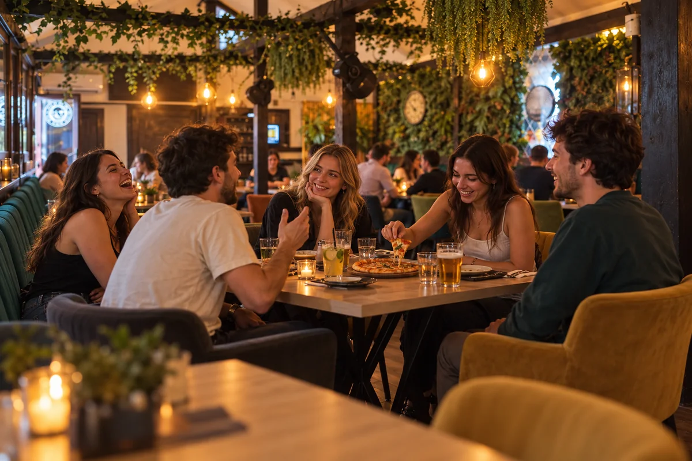

Oamenii fac seara.
Serile au
locul lor.
Un meci cu gașca, povești la masă și timp petrecut împreună. Descoperă atmosfera și spațiile Old Mike.
01 / ATMOSFERA OLD MIKE
Pentru serile
petrecute împreună.
În jurul mesei sau cu ochii la meci. Fiecare gașcă are seara ei.
Meciul se vede mai bine împreună.
Un ecran, o masă și gașca ta.
Mărește imagineaMai spune o dată povestea.
Pizza la mijloc. Râsete de jur împrejur.
Mărește imagineaÎncă puțin pe terasă.
Se aprind luminile. Conversația continuă.
Mărește imagineaPentru încă o seară împreună.
Momente mici, cu oamenii potriviți.
Mărește imagineaScene de atmosferă generate, inspirate de spațiile Old Mike.
02 / SPAȚIILE RESTAURANTULUI
Tu unde
te așezi?
Terasa exterioară, terasa acoperită, interiorul și barul. Patru perspective ale aceluiași loc.
Terasa exterioară
Mai aproape de aer liber. Mai mult timp împreună.
Mărește imagineaTerasa acoperită
Lumină caldă și loc pentru povești.
Mărește imagineaInterior
Un colț de pub, cu oamenii tăi.
Mărește imagineaBarul
Aici începe seara Old Mike.
Mărește imaginea